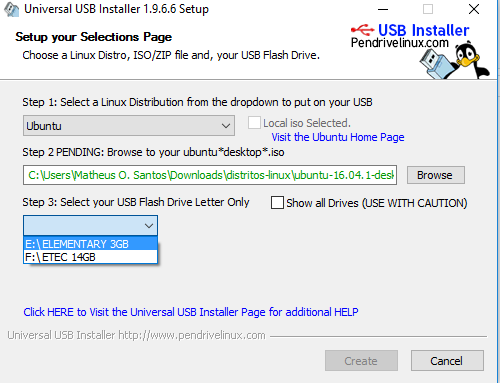
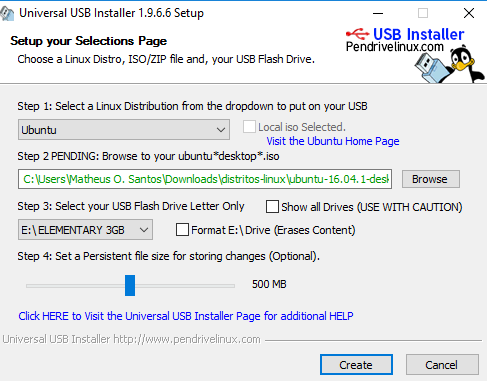

Tutorial: Pendrive bootavel com Linux e memória persistente
- By Matheus O. Santos
- ter 10 outubro 2017
Hoje, vou mostrar para vocês como instalar uma distribuição linux com memória persistente. Bem, já vou avisando que o programa que vou usar hoje, pode não ser compátivel com todas as distribuições, mas para isso há outro programa chamado LiLi USB que talvez, TALVEZ, funcione a distribuição que você queira, por enquanto são os únicos que eu conheça. Mas se souber de mais algum, falo aqui e faço outro tutorial.
O que precisaremos para a realização do projeto. Precisaremos do Universal-USB-Installer e um pendrive eu recomendaria um no mínimo de 4 GB e eu usarei um com esse tamanho. Primeiro baixe o Universal-USB-Installer aqui Ele não é um aplicativo que precisa ser instalado para usar ele, basta apenas abrir ele após baixar. Abra o aplicativo. E você terá uma tela com um tela com o acordo de licença (license agreement). Clique em "I Agree" para continuar. Depois disso você terá essa tela:

Clique aqui e selecione sua distro. Eu usarei a do ubuntu:

Ao clicar aparecerá isso. Clique em Browse e selecione onde sua distro está

Depois de selecionar sua distro é a hora de você escolher o pen drive que você usará

Após você escolher o pen drive, se sua distro tiver suporte nesse programa. Aparecerá a opção abaixo, nessa opção você pode escolher o tamanho da sua memória que servirá para guardar suas configurações, músicas e etc. Eu escolherei 500 MB.

Após isso clique em create e aparecerá essa tela dizendo
1)Criar sistema Linux Master Boot Record (MBR)- MBR existentes serão sobrescritos
2)Criar UUI label no [E:]- Labels existentes serão sobrescritos
3)Instalar Ubuntu no [E:]
Você tem certeza que o dispositivo [E:] é seu?
Checagem dupla com windows (meu computador) para ter certeza
Clique SIM para fazer essas ações e clique em NÃO para abortar.
Clique em sim para instalar.

E ela começará:

Ao terminar clique em close e pronto sua distro com memória persistente está pronta! Apenas reinicie seu computador e use-a. Caso não funcione altere a ordem do boot na bios, e caso mesmo assim não funcione, que provavelmente será o caso da versão do Windows 8 e Windows 10. Segure SHIFT, e clique em reiniciar, irá aparecer uma tela dizendo "Selecione uma opção". Clique em "Use um dispositivo". E depois selecione a primeira opção e pronto, irá fazer o reboot. Ao reiniciar ele entrará no menu grub. Esse menu grub terá várias opções, e se atente a elas. Você tem que clicar em "try o nome da sua distribuição whitout installing".
Divirta-se

{kind=link}
{kind=link}